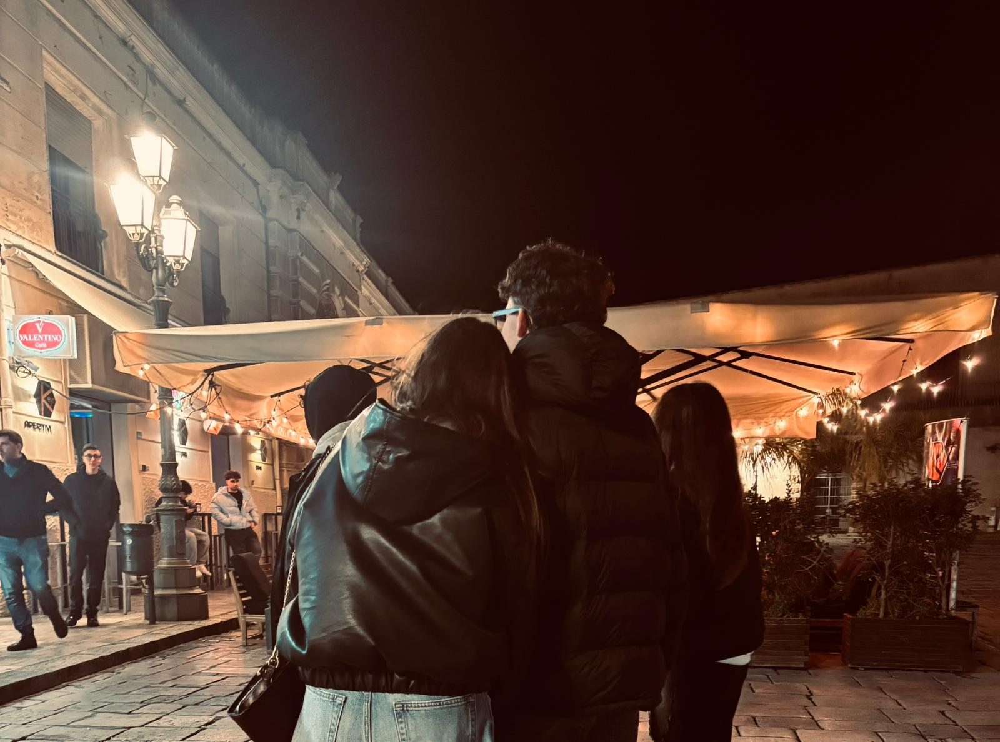
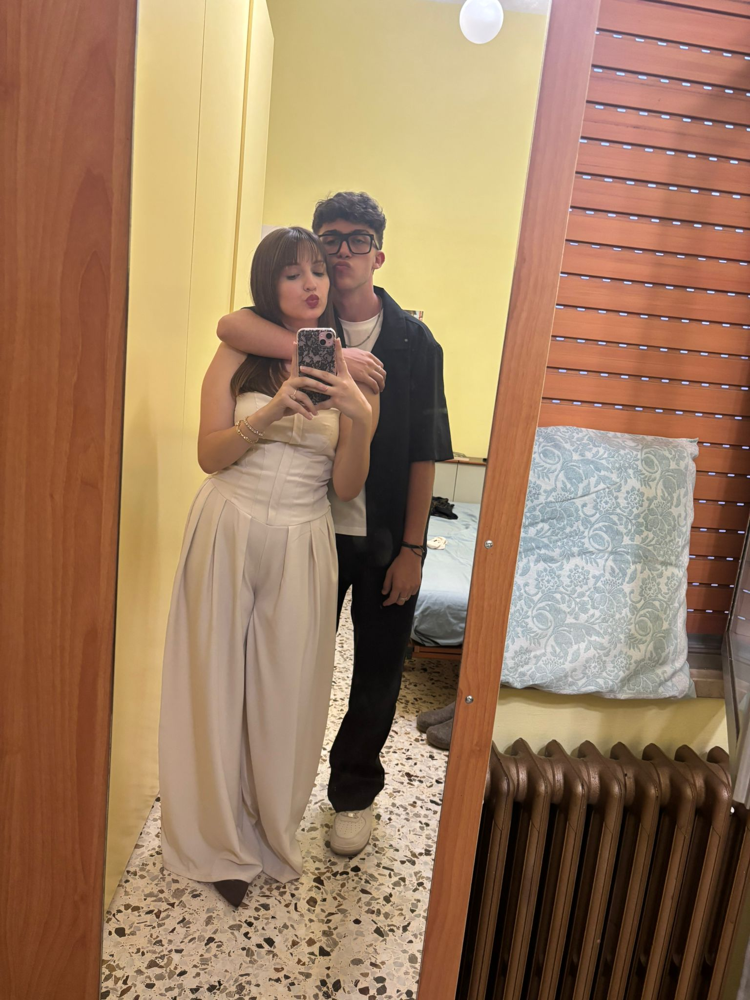
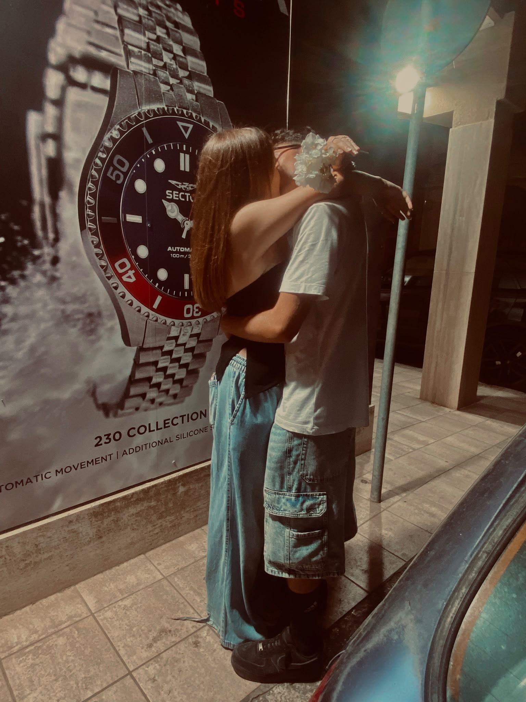
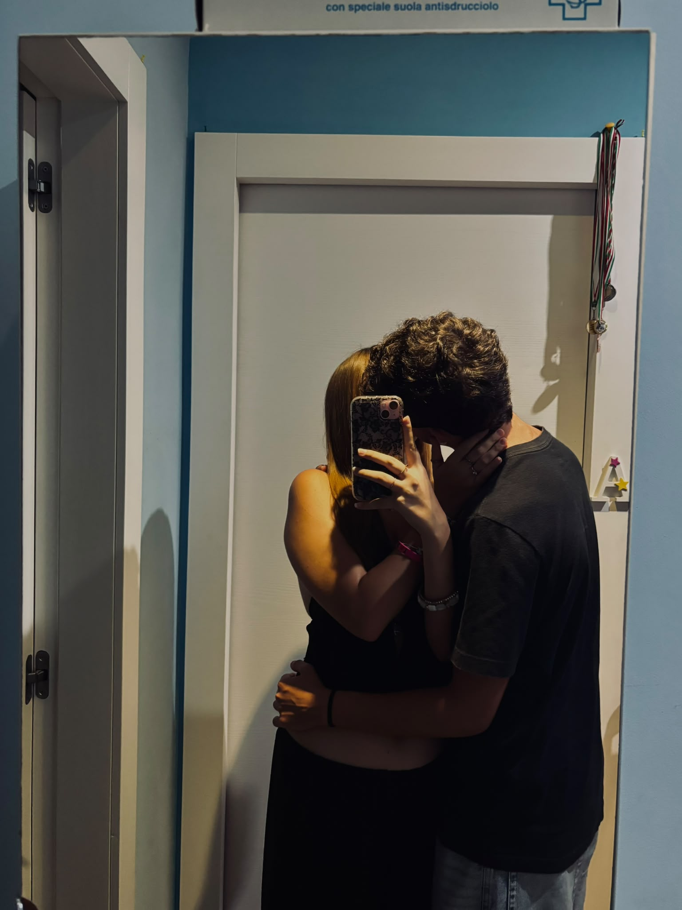
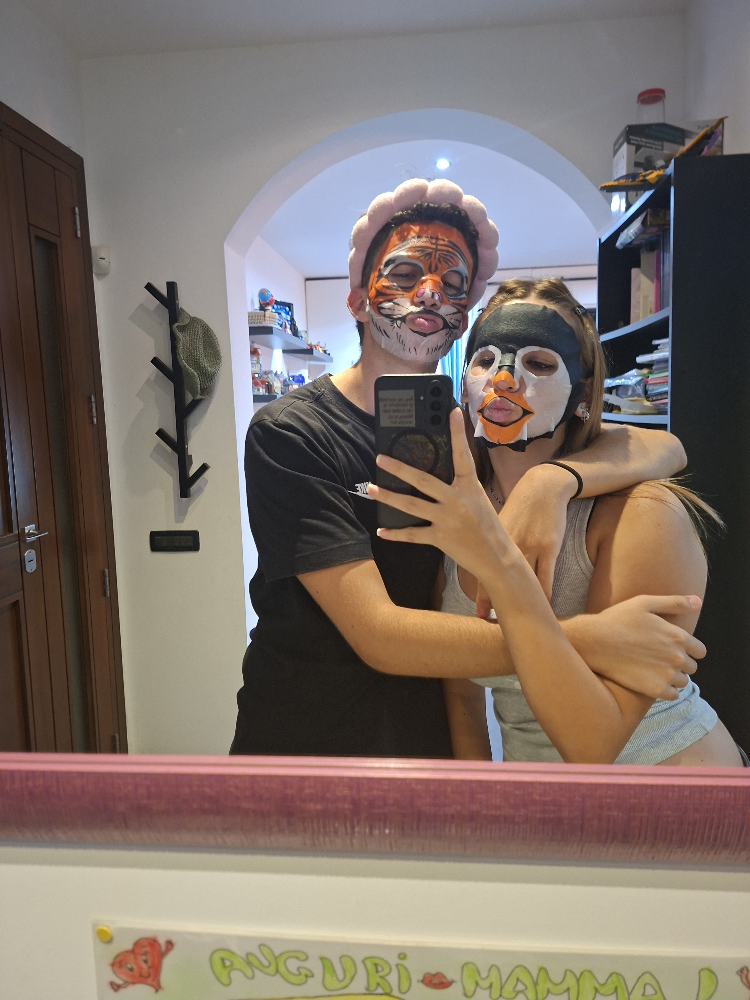
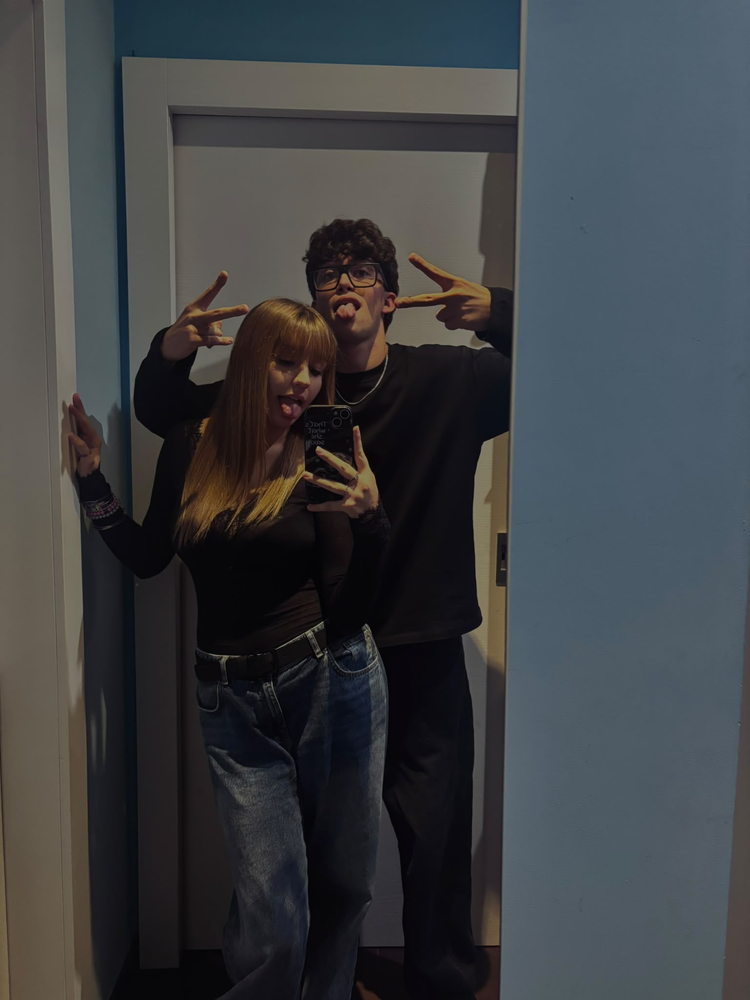

Un anno intero nella tua orbita.
Dodici mesi, milioni di secondi e un solo punto fermo: noi due.
365 giorni in 12 scatti








A te, che sei l'estensione della mia anima
Se mi guardo indietro e penso a dove eravamo esattamente un anno fa, mi rendo conto di quanto tutto sia cambiato e, allo stesso tempo, di quanto fosse già scritto.
Non sono molto bravo con le parole e lo sa, ma in questa lettera proverò ad impegnarmi come non mai.
La formula di Dirac, che descrive l'entanglement: dice che quando due sistemi interagiscono a fondo per un certo tempo, restano connessi per sempre, indipendentemente dalla distanza. Qualunque cosa accada a uno, influenza istantaneamente l'altro. Ecco, credo che noi siamo esattamente questo. Da quel primo giorno, ogni risata, ogni silenzio, ogni piccolo traguardo e ogni tempesta superata ci hanno legato in un modo che va oltre la semplice abitudine o la coincidenza. Siamo entrati l'uno nell'orbita dell'altra e non ne siamo più usciti.
In questi 365 giorni ho imparato a conoscere ogni tua sfumatura. Ho imparato ad amare le tue lune storte, quei momenti in cui il mondo fuori è troppo rumoroso e trovi rifugio nei tuoi spazi, e ho capito che non c'è posto al mondo in cui preferirei stare se non accanto a te, a proteggerti e a guardarti mentre sorridi.
Non mi servivano grandi effetti speciali o sorprese eclatanti per questo anno, perché la verità è che la sorpresa più bella sei tu. Ogni singolo giorno. Mi hai insegnato cosa significa prendersi cura di qualcuno genuinamente, senza voler nulla in cambio, sentirsi a casa anche quando si è lontani da casa, e scoprire che la felicità non è un concetto astratto, ma ha il tuo viso, la tua voce e il modo in cui mi guardi.
Grazie per esserci stata nei giorni leggeri e soprattutto in quelli più difficili, quando tutto sembrava pesante e tu sei stata la mia ancora di salvezza, il faro che mi guidava nella tempesta. Grazie per essere esattamente come sei, con la tua dolcezza, la tua forza e quella testa un po’ scema che rende ogni giorno diverso dal precedente. Non cambiare mai.
Questo primo anno è solo il capitolo uno di tutto quello che scriveremo insieme. Ti amo profondamente, in tutte le linee del tempo possibili.
BUONNN PRIMOOO ANNIVERSARIOOO AMOREEE MIOOO!!!